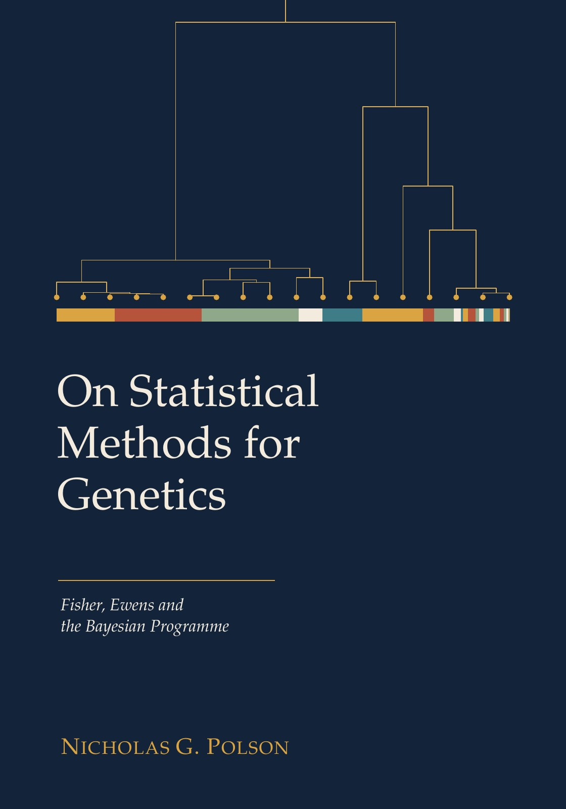

On Statistical Methods for Genetics Fisher, Ewens and the Bayesian Programme
By Nicholas G. Polson.


Description
This book treats the mathematical theory of population genetics as a problem in statistical inference, from Fisher’s Fundamental Theorem of Natural Selection to learned inference for the coalescent.
It shows that Fisher’s decomposition of the rate of change of mean fitness holds for arbitrary genotype frequencies, with an exact remainder computed for one and two loci. It shows that the usual plug in estimate of the additive genetic variance is inflated by a term that grows with the number of loci, and that shrinkage under a horseshoe prior gives a conservative correction. It derives the Ewens sampling formula from de Finetti’s theorem, proves that among sampling weights only power weights preserve the residual allocation structure of Poisson Dirichlet subdivisions, and leaves the case of general weights as a stated conjecture. It develops rational conjugacy for Pochhammer priors on concentration parameters, with exact residue formulas for normalizing constants and Zipf tails for the counts they generate. For inference without a likelihood it proves that a learned quantile map that attains the Bayes risk is sufficient, that the number of segregating sites is not sufficient for the mutation rate, and that DeepSets encoders see only the site frequency spectrum.
The book is written for statisticians and mathematical biologists with graduate level probability. Numerical results are labelled as computations where they rest on simulation.
How to cite
Polson (2026), On Statistical Methods for Genetics: Fisher, Ewens and the Bayesian Programme, edition 1, https://doi.org/10.5281/zenodo.23509850.
@book{polson2026statistical_methods_genetics,
author = {Polson, Nicholas G.},
title = {{On Statistical Methods for Genetics: Fisher, Ewens and the Bayesian Programme}},
year = {2026},
publisher = {Independently published},
doi = {10.5281/zenodo.23509850},
url = {https://vsokolov.org/books/statistical_methods_genetics/}
}Main results
- Whole genome Fundamental Theorem decomposition (Theorem 3.5, page 66): For arbitrary genotype frequency paths, the rate of change of mean Malthusian fitness splits exactly into an additive part and a remainder; the remainder vanishes whenever the log frequencies move inside the span of the gene contents, and it vanishes for every assignment of fitnesses only then.
- Exact remainder for one locus with k alleles (Theorem 3.16, page 76): In the one locus random mating model with constant fitnesses, the change in mean fitness is the additive term divided by mean fitness plus an explicit quadratic remainder in the dominance deviations.
- Oracle shrinkage understates the additive variance (Proposition 4.10, page 140): Shrinkage tuned to estimate each average effect as well as possible necessarily understates the additive variance, by an explicit amount.
- Shrinkage weights are stick breaking weights (Theorem 5.15, page 180): The Beta law of the horseshoe type shrinkage weight is exactly the law of the first stick breaking weight of the two parameter GEM family, which links shrinkage priors to Ewens Pitman partitions.
- Rigidity of the residual allocation structure (Theorem 7.11, page 271): Among sampling densities that charge every interval, only power weights keep the induced subdivision of the size biased layout a residual allocation model, so for a discount strictly between zero and one no such density other than the uniform one carries a two parameter Poisson Dirichlet law to the stick breaking sequence of another member of the family.
- A bottleneck that attains the Bayes risk is sufficient (Theorem 10.12, page 399): If a learned map that factors through a summary of the data attains the minimal check loss, the summary is sufficient, so sufficiency can be tested by comparing risks.
- The number of segregating sites is not sufficient for theta, likelihood argument (Proposition 11.12, page 443): The conditional law of the infinite sites data given the site count depends on theta through the latent tree, shown explicitly for three and four sequences.
- DeepSets encoders factor through the site frequency spectrum (Theorem 11.16, page 445): Any encoder built from per site permutation invariant features depends on the data only through the site frequency spectrum, which caps what such an encoder can learn.
All 58 results of the book (57 proved, 1 open) are on the page Results by chapter, each with its statement, status and number.
License: Text, figures and PDF: CC BY 4.0. Code: MIT.
This page is generated from the book’s repository (main). The numbers and pages are those of the PDF, version 1.0.1.